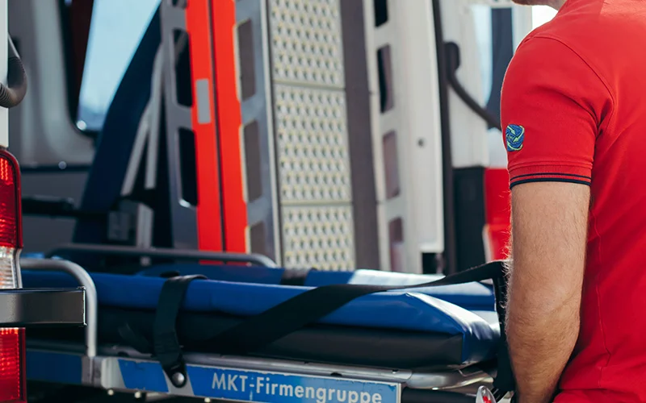
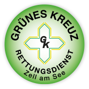
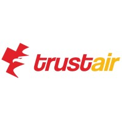
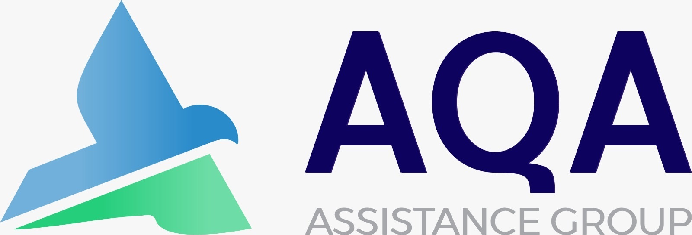
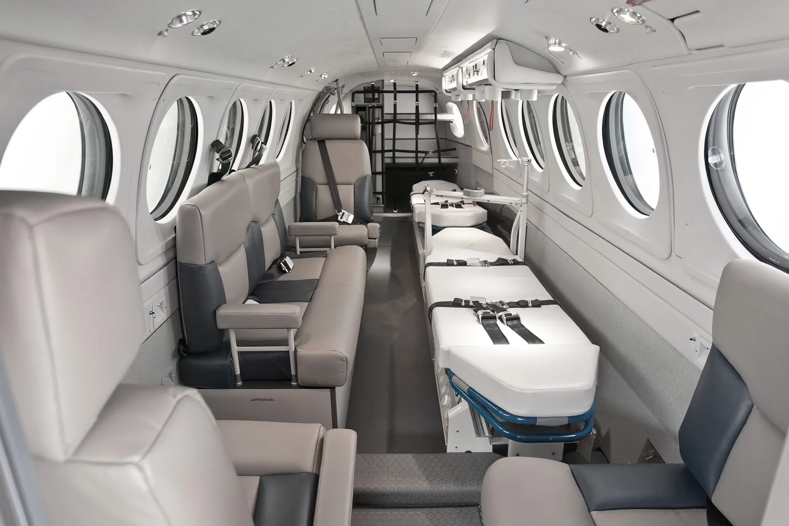
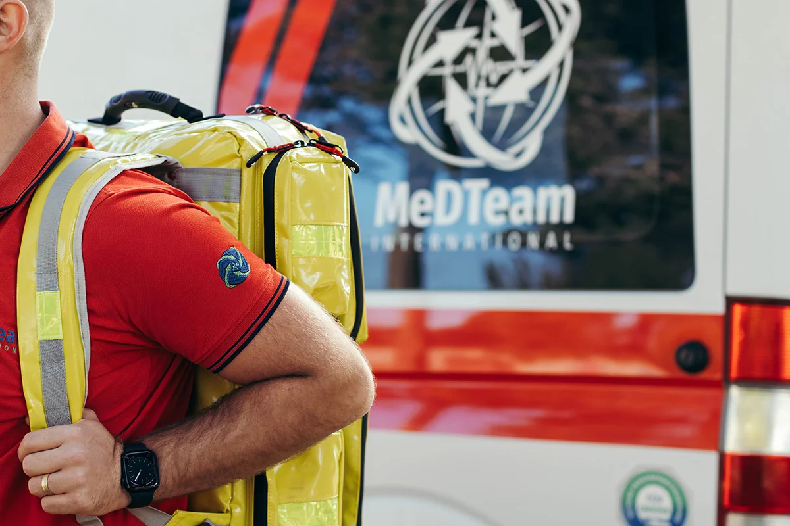
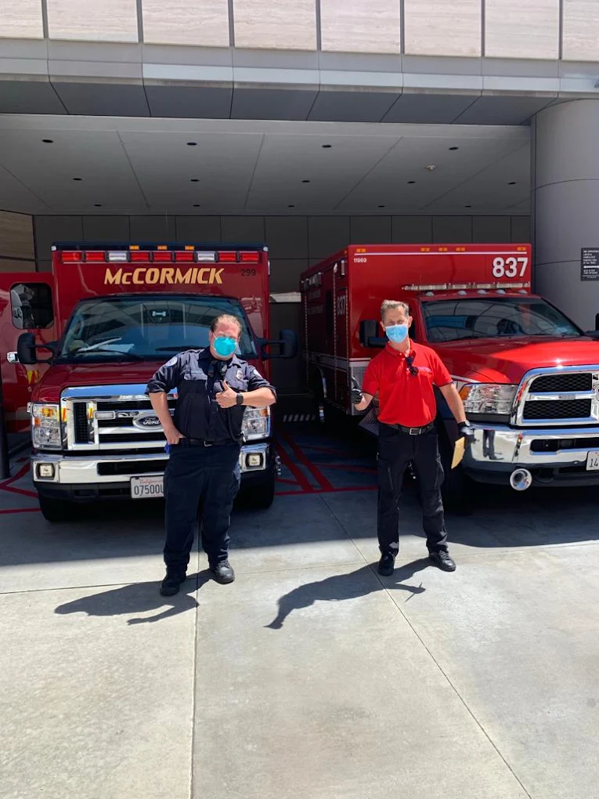

01 / ROAD
Ground ambulance
Medically staffed transport across Croatia and European borders, including hospital-to-hospital and homebound transfers.
Ground ambulance detailsMEDICAL REPATRIATION FROM CROATIA · ROAD & AIR
Based in Pula, Croatia, our medical team coordinates patient transfers by road and air across Europe and beyond. We plan the journey, keep you informed and stay through handover.
For assistance companies, hospitals and families · 24/7 contact
OUR NETWORK
Medical providers and assistance partners have worked with MedTeam International.



WHAT WE DO
From a short hospital transfer to an international repatriation, we arrange transport around the patient’s medical needs.

Medically staffed transport across Croatia and European borders, including hospital-to-hospital and homebound transfers.
Ground ambulance details
Medical staff accompany patients on flights and coordinate the ground legs and receiving handover.
Air escort details
On-the-ground medical support and coordination when a patient needs assessment, accompaniment or a transfer plan.
Medical assistance details
US ambulance crew handoverFROM FIRST CALL TO HANDOVER
Cross-border transfers involve hospitals, vehicles, flights and receiving teams. Our medical crew coordinates the route and the patient’s care, then keeps the people involved updated as the journey progresses.
PATIENT & FAMILY REVIEWS
“They handled everything like they had it planned for years. They also kept us up to date hourly with everything that was going on.”
“They were very professional and explained everything to us before the flight and during the flight home. Our father felt very comfortable.”
“From the very first contact, everything was quick, straightforward, and absolutely professional. We were also kept clearly informed of the progress at all times.”
A MEDICAL TEAM, FIRST
Founder Dario Janović is a University Master in Nursing, specialized in emergency medical services. He has more than 10 years of ambulance experience; MedTeam International has operated for 7 years.
The team includes medical technicians and doctors, with support in English, German and Italian.
Meet the teamyears in ambulance work
Founder experience
NEED TO MOVE A PATIENT?
Share the route and your contact details. Our team will help plan the next step.